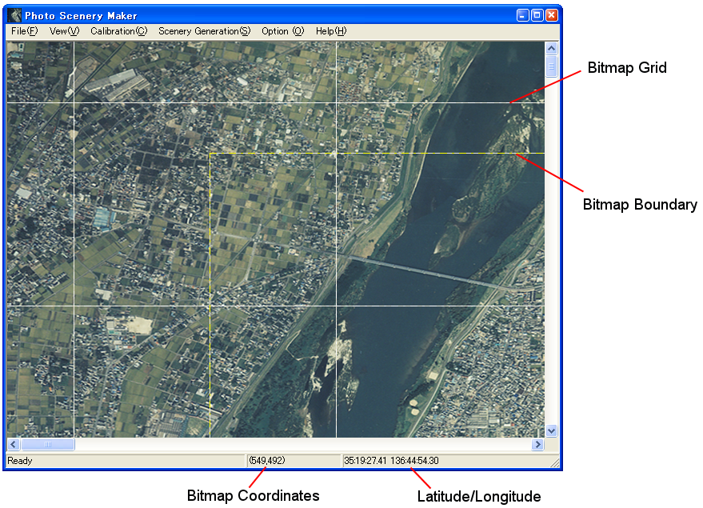
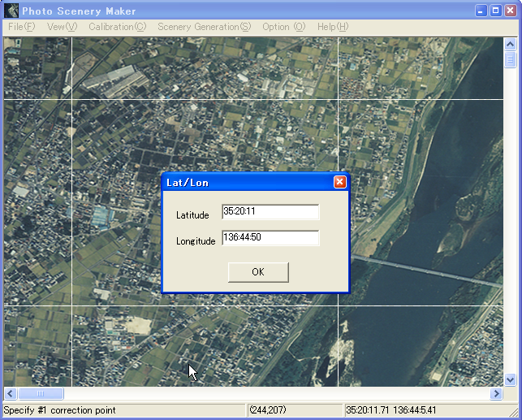

You can scroll the bitmap with scroll bar, or drag over the main window with left or right mouse button.
Select "2 point calibration" from "Calibration" menu. Click first reference point in the photo, and specify latitude/longitude of the point.

Next, click second reference point, and specify latitude/longitude.
That's all. Check the latitude/longitude displayed in status bar.